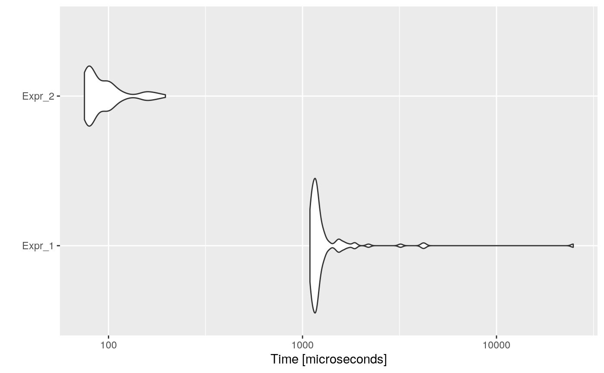

Dead Expression Elimination intends to remove those expressions that do not modify the environment.
In R, when evaluating an expression which is not assigned to any variable, its result will be seen in the console. However, when the expression is within a function definition, the value will not be printed, the environment will not be modified, and anyway the computational cost will be incurred.
For example, in the code:
The unassigned val expression is a dead expression, and could be removed.
This optimization strategy is closely related to dead store elimination, since when a dead store is deleted, it is possible that a dead expression is generated.
Consider the following example:
code <- paste( "foo <- function(n) {", " i <- 0", " res <- 0", " while (i < n) {", " res <- res + i", " i <- i + 1", " res", " }", " res", "}", "foo(10000)", sep = "\n" ) cat(code)
## foo <- function(n) {
## i <- 0
## res <- 0
## while (i < n) {
## res <- res + i
## i <- i + 1
## res
## }
## res
## }
## foo(10000)Then, the automatically optimized code would be:
opt_code <- opt_dead_expr(list(code)) cat(opt_code$codes[[1]])
## foo <- function(n) {
## i <- 0
## res <- 0
## while (i < n) {
## res <- res + i
## i <- i + 1
## }
## res
## }
## foo(10000)And if we measure the execution time of each one, and the speed-up:
bmark_res <- microbenchmark({ eval(parse(text = code)) }, { eval(parse(text = opt_code)) }) autoplot(bmark_res)

speed_up(bmark_res)
## Min. 1st Qu. Median Mean 3rd Qu. Max.
## Expr_2 11.67878 11.61415 11.42088 14.09386 10.84379 171.2217The opt_dead_expr detects which code chunks are function definitions. Then for each function, the optimizer gets it body, detects dead expressions, i.e., not assigned expressions, and eliminates them if they are not returned by the function.
An expression will be considered a dead expression if:
Check if dead expressions have never-assigned vars?
The optimizer is currently eliminating any dead expression, however, the code:
foo <- function() { x return(8818) }
is not equivalent to
foo <- function() { return(8818) }
Both functions will return the same value, however, the first one will give an error similar to:
foo() ## Error in foo() : object 'x' not found